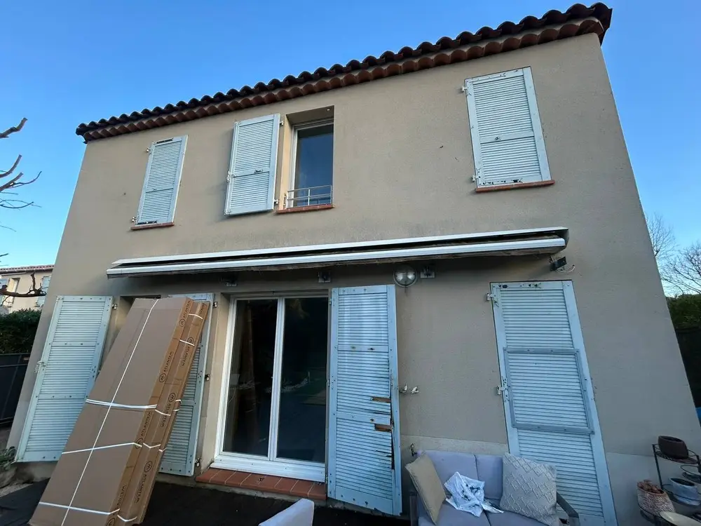
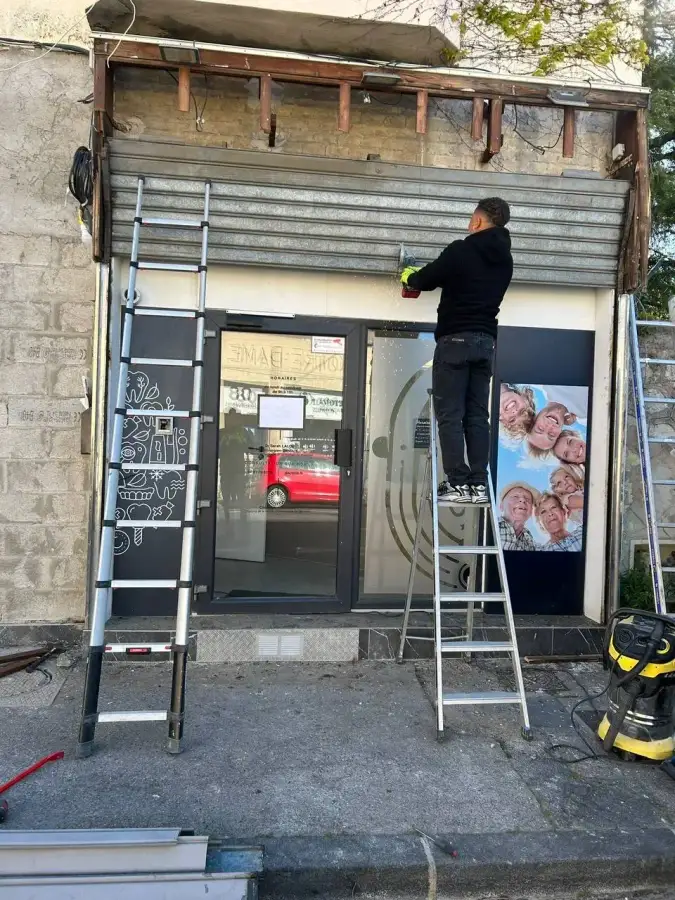

Vous cherchez le prix d'une fenêtre PVC à Marseille avant de vous lancer ? Bonne idée : entre un modèle d'entrée de gamme et une fenêtre sur-mesure posée dans les règles, le budget peut varier du simple au double. Le PVC reste le matériau le plus choisi pour remplacer ses fenêtres, grâce à son excellent rapport qualité/prix et à son isolation. Dans ce guide, on détaille les fourchettes de prix 2026, les facteurs qui font varier le devis, les aides possibles et nos conseils d'artisan pour ne pas vous tromper.
Cet article fait partie de notre guide complet pour changer ses fenêtres à Marseille (quand changer, matériaux, vitrage, pose et aides).

Le prix d'une fenêtre PVC posée à Marseille
Voici des fourchettes indicatives, pose comprise, constatées à Marseille et dans les Bouches-du-Rhône pour du PVC double vitrage de qualité courante. Ce sont des ordres de grandeur : seul un devis après prise de mesures donne un prix juste.
Fourchettes de prix selon le type de fenêtre
| Type de fenêtre PVC | Dimensions indicatives | Prix posé (fourchette) |
|---|---|---|
| Fenêtre 1 vantail | 60 × 75 cm | 250 – 450 € |
| Fenêtre 2 vantaux | 120 × 115 cm | 400 – 800 € |
| Porte-fenêtre 2 vantaux | 140 × 215 cm | 700 – 1 300 € |
| Coulissant / baie vitrée | 200 × 215 cm | 900 – 2 000 € |
Fourniture, pose et dépose : ce que le devis inclut
Un prix affiché ne veut rien dire sans le détail. Vérifiez toujours ce qui est compris :
- La fourniture de la fenêtre sur-mesure (profilé, vitrage, quincaillerie).
- La pose proprement dite, avec calfeutrement et finitions.
- La dépose de l'ancienne fenêtre et l'évacuation des gravats.
- Les éventuelles reprises de maçonnerie ou d'habillage intérieur.
Ce qui fait varier le prix de vos fenêtres
À dimensions égales, deux devis peuvent différer sensiblement. Voici les principaux leviers.
Dimensions et type d'ouverture
- Une grande baie coulissante coûte forcément plus qu'une petite fenêtre de salle de bain.
- L'ouverture oscillo-battante (entrebâillement par le haut) est un peu plus chère qu'une ouverture à la française classique.
Le vitrage : double, phonique ou renforcé
- Le double vitrage standard convient à la majorité des logements.
- Un vitrage phonique se justifie sur les grands axes marseillais (bruit de circulation).
- Un vitrage à isolation renforcée améliore encore le confort thermique, mais fait monter la facture.
Les options : volet roulant, coloris, sécurité
- Volet roulant intégré au bloc-fenêtre : pratique, mais à chiffrer à part.
- Coloris ou imitation bois plutôt que blanc standard.
- Poignée à clé et vitrage retardateur d'effraction pour le rez-de-chaussée.

PVC, aluminium ou bois : que choisir ?
Le matériau pèse lourd dans le prix final comme dans le rendu. En résumé :
- PVC — le meilleur rapport qualité/prix, très bonne isolation, aucun entretien. Le choix par défaut pour la plupart des logements marseillais.
- Aluminium — plus cher (souvent +30 à +50 %), mais profilés fins et look contemporain, idéal pour les grandes surfaces vitrées et les vues dégagées.
- Bois — chaleureux et haut de gamme, mais plus coûteux et exigeant en entretien, surtout face à l'air marin.
Le sujet mérite un article à lui seul : on détaille tout dans notre comparatif fenêtre PVC ou aluminium : que choisir à Marseille ?. Vous pouvez aussi voir notre page pose de fenêtres sur-mesure à Marseille ou nos chantiers réalisés.
Marseille : pourquoi le contexte local compte
Changer ses fenêtres à Marseille, ce n'est pas tout à fait comme ailleurs. Le climat et le bâti local ont un vrai impact sur le choix et le prix.
Chaleur, mistral et air marin
- La chaleur d'été rend le double vitrage à contrôle solaire particulièrement utile côté sud.
- Le mistral exige des menuiseries bien posées et étanches à l'air.
- L'air marin favorise le PVC et l'alu (sans entretien) plutôt que le bois près du littoral (La Ciotat, Cassis).
Copropriétés et centre-ville : les contraintes
- En copropriété (nombreux immeubles du centre et des 13006, 13008…), l'aspect extérieur des fenêtres peut être encadré par le règlement.
- Dans le bâti ancien, la prise de mesures doit être précise : peu d'ouvertures sont vraiment « standard ».
Aides, TVA et financement
Des aides existent pour la rénovation énergétique (MaPrimeRénov', CEE…), mais elles sont soumises à conditions et nécessitent en général un installateur certifié RGE. Pour un simple remplacement de confort, le plus simple reste de raisonner sur le prix réel du devis. On vous conseille honnêtement selon votre situation, sans vous promettre une aide à laquelle vous n'auriez pas droit.
5 conseils d'artisan pour bien acheter
- Exigez un devis détaillé (fourniture, pose, dépose, finitions) plutôt qu'un prix « à la louche ».
- Méfiez-vous des prix trop bas : souvent, la pose ou la dépose n'est pas comprise.
- Privilégiez un artisan local, joignable après la pose, qui prend les mesures lui-même.
- Ne surpayez pas des options inutiles : mieux vaut une bonne fenêtre bien posée qu'un modèle sur-équipé mal installé.
- Demandez à voir des réalisations locales et des avis clients avant de signer.
Envie d'un prix précis pour vos fenêtres ?
Je prends les mesures et je vous remets un devis clair et gratuit sous 48 h, à Marseille et dans les Bouches-du-Rhône et le Var.
Demander mon devis gratuitFoire aux questions
Quel est le prix moyen d'une fenêtre PVC posée à Marseille ?
Pour une fenêtre PVC double vitrage à deux vantaux, comptez en moyenne entre 400 et 800 € posée. Le prix dépend des dimensions, du type d'ouverture, du vitrage et de la dépose de l'ancienne fenêtre.
Le double vitrage est-il obligatoire à Marseille ?
Il n'est pas obligatoire mais fortement recommandé. Il protège de la chaleur d'été, du bruit urbain et de l'air marin. C'est aujourd'hui le standard : le simple vitrage n'est quasiment plus posé.
Faut-il choisir le PVC ou l'aluminium ?
Le PVC offre le meilleur rapport qualité/prix et une excellente isolation. L'aluminium, plus cher, permet des profilés fins et de grandes surfaces vitrées. Le choix dépend du budget, du style et des dimensions.
Combien de temps dure la pose de fenêtres ?
Comptez 1 à 2 heures par fenêtre. Un chantier de plusieurs fenêtres se réalise généralement sur une à deux journées, selon l'accès au logement et le type de pose.
Dans quels secteurs intervenez-vous autour de Marseille ?
M13 Menuiseries intervient sur tout Marseille et ses arrondissements, ainsi qu'à Aubagne, Gémenos, La Ciotat, Cassis et plus largement dans les Bouches-du-Rhône et le Var.
En résumé
Une fenêtre PVC posée à Marseille coûte le plus souvent entre 400 et 800 € pour un modèle courant, mais votre prix réel dépend de vos ouvertures, du vitrage et de la pose. Le vrai réflexe : comparer des devis détaillés d'artisans locaux plutôt que des prix bruts. Vous avez un projet ? Demandez votre devis gratuit, on en parle et je vous conseille selon votre logement.